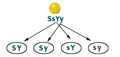
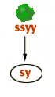
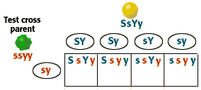
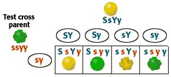

Dihybrid Cross
Problem 6: Offspring of a SsYy x ssyy test cross.
Tutorial to help answer the question
| The expected phenotypic ratio of the progeny of a SsYy x ssyy test cross: |
Alleles of parent 1
| There are four combinations of alleles in the gametes from partent 1. |  |
Alleles of parent 2
| There is only one possible combination of alleles in the gametes from parent 2. |  |
Test Cross
| This cross can be used to determine if this spherical yellow seeded plant was heterozygous for either the seed shape or seed color trait. |  |
Phenotype of offspring
|
Each of the genotypes of the offspring corresponds to a different phenotype.
SsYy are smooth, yellow seeded
|
 |


University of Arizona
Tuesday, August 13, 1996
Contact the Development Team
http://www.biology.arizona.edu
All contents copyright © 1996. All rights reserved.